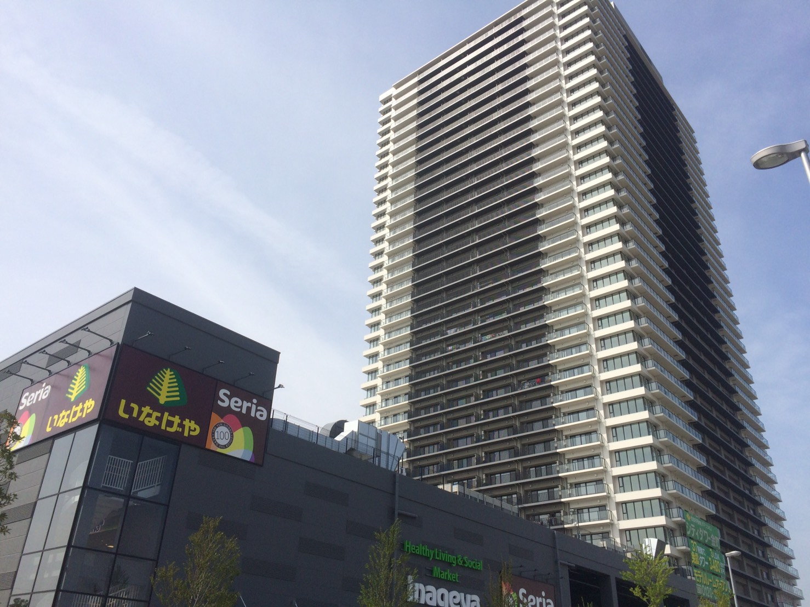

東京23区内のタワーマンションとしてはかなり安い方なので、タワーマンションに住みたいけれども予算が合わなかったという人にはオススメ。
基本的に隣接する高層建築物がないため眺望はとても良い。夏にはベランダから花火大会も見えるはずだ。
スーパーのいなげや、100円ショップのSeriaが隣接、正面には公園、東京理科大葛飾キャンパスがあるので生活には便利。
ただし、駅は少し遠い。また、電車の音も窓を開けているときは気になる。
あとは、ベランダが外から丸見えなのは少し残念。

| 物件概要 | |
|---|---|
| 物件名 | シティタワー金町 |
| アクセス | JR常磐線金町駅より徒歩12分 |
| 販売価格 | 3,690万円～6,990万円 |
| 完成時期 | タワー棟 平成28年2月22日、レジデンス棟 平成27年3月3日 |
| 所在地 | 東京都葛飾区 新宿六丁目2400－18（地番） |
| 総戸数 | 840戸（タワー棟 700戸、レジデンス棟 140戸） |
| 敷地面積 | 17,659.92m2 |
| 構造 | 鉄筋コンクリート造 |
| 販売会社 | 住友不動産株式会社 |
| 設計 | 株式会社竹中工務店 |
| 施行 | 株式会社竹中工務店 |
| URL | http://www.sumitomo-rd-mansion.jp/shuto/kanamachi/ |
| 中古販売 | suumoでシティタワー金町を見る |